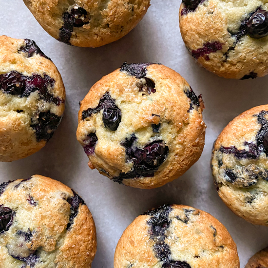

World's Best Lemon Blueberry Muffins

Description
Ingredients
- 3¼ cups all-purpose flour
- 4 teaspoons baking powder
- 1 teaspoon baking soda
- ½ teaspoon salt
- 1⅓ cups white sugar
- 1¼ cups milk
- 1 cup sour cream
- ½ cup melted butter
- 2 large eggs
- 1 tablespoon lemon zest
- 1½ cups frozen blueberries
Steps
- Preheat the oven to 350 degrees F (175 degrees C). Line 16 muffin cups with paper liners.
- Sift flour, baking powder, baking soda, and salt together in a bowl.
- Combine sugar, milk, sour cream, butter, eggs, and lemon zest in a large bowl. Beat with an electric mixer on low speed until blended. Fold in the flour mixture until batter is just moistened. Fold in blueberries; avoid overmixing because batter will turn purple.
- Fill muffin cups 3/4 full of batter.
- Bake in the preheated oven until golden brown, 30 to 35 minutes. Let cool for 10 minutes.